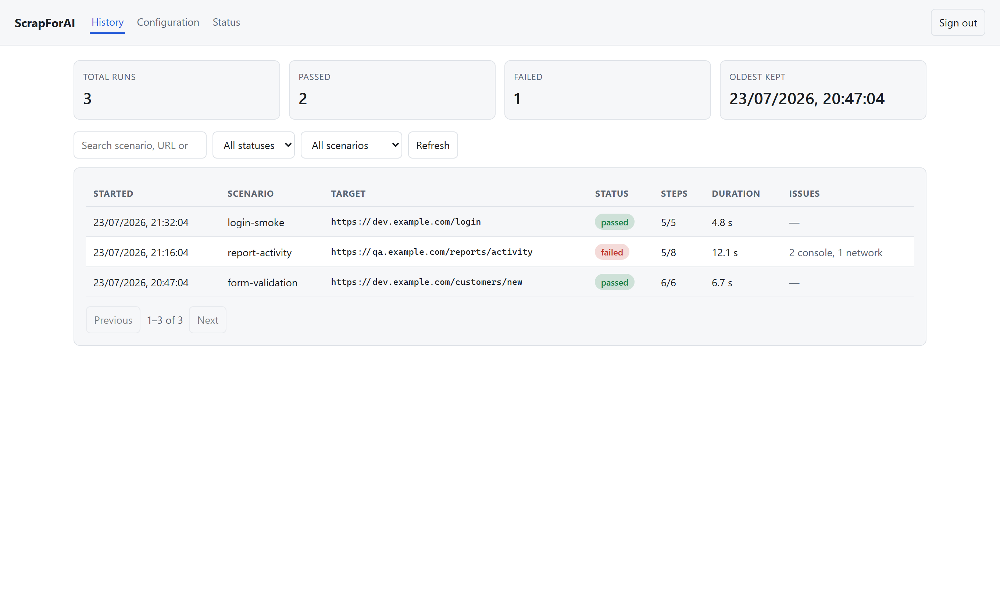
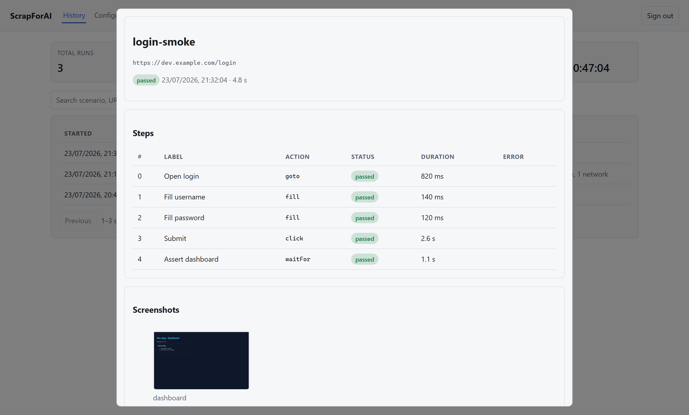
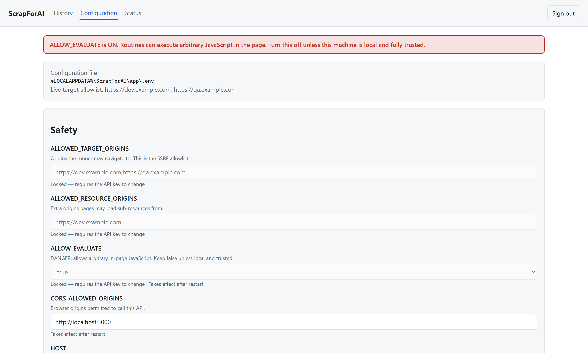
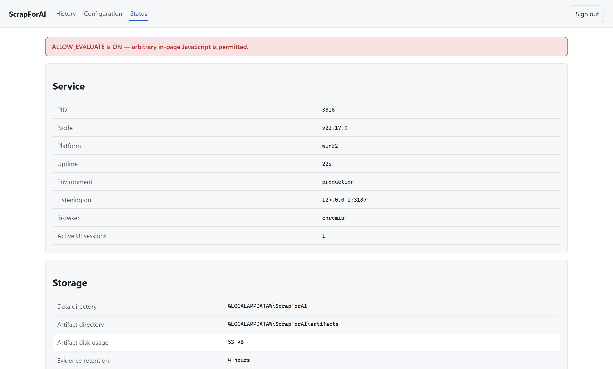

Console web
Um console de navegador integrado para revisar o histórico de execuções, editar a configuração e verificar o estado do serviço — servido pelo próprio ScrapForAI, sem nenhum aplicativo separado para instalar.
Ativar o console
Defina UI_ENABLED=true no seu .env e abra o console em:
http://127.0.0.1:<PORT>/ui/As versões instaladas vêm com o console ativado por padrão. Ao visitar a raiz do servidor (/), você é redirecionado para lá.
Entrar
Você entra com sua chave de API. O servidor a troca por um cookie de sessão httpOnly; SameSite=Strict, de modo que a chave nunca é armazenada no navegador nem pode ser lida pelo JavaScript da página. Ao sair, ou ao reiniciar o servidor, a sessão termina.
As escritas autenticadas por cookie também carregam um cabeçalho X-ScrapForAI-UI: 1 que páginas de outra origem não conseguem definir — é isso que impede o cookie de sessão de reintroduzir CSRF. Consulte o Modelo de segurança para a justificativa completa.
Histórico de execuções
A tela Histórico lista todas as execuções anteriores, da mais recente para a mais antiga, com contagens de sucesso/falha no topo e filtros por estado, cenário e texto livre.

Os registros de execução e a evidência pesada para a qual apontam são mantidos em dois cronogramas independentes: o índice compacto sobrevive por HISTORY_RETENTION_DAYS (90 por padrão), enquanto capturas e traces são removidos após ARTIFACT_RETENTION_HOURS (4 por padrão).
Clique em qualquer linha para abrir seu detalhe: o desdobramento passo a passo, as capturas, os erros de console e as falhas de rede. Quando a evidência já foi removida, o registro ainda abre com um aviso de “evidência expirada” em vez de um erro.

Configuração
A tela Configuração edita o .env pelo navegador, agrupada em Segurança, Limites, Runtime e Histórico.

- Os campos bloqueados —
SCRAPFORAI_API_KEY, as listas de origens permitidas,ALLOW_EVALUATEeHOST— são exibidos, mas não podem ser alterados apenas com uma sessão da interface. Alterá-los exige apresentar a chave de API como token bearer, de modo que uma sessão sequestrada não pode ampliar a lista de permitidos SSRF nem habilitar JavaScript arbitrário na página. - Os campos que exigem reinício são rotulados como tais. A maior parte da configuração é lida uma única vez na inicialização, então o console grava o
.env(com backup em.env.bak) e informa quando um reinício é necessário para uma alteração ter efeito. - Um aviso vermelho aparece sempre que
ALLOW_EVALUATEestá ligado, porque essa opção permite JavaScript arbitrário na página alvo.
Estado
A tela Estado informa sobre o serviço em execução e seu armazenamento: endereço de escuta, tempo ativo, motor de navegador, sessões ativas, diretórios de dados e de artefatos, uso de disco e as janelas de retenção. Ela exibe um aviso se o serviço estiver escutando em 0.0.0.0 ou se ALLOW_EVALUATE estiver ligado.
